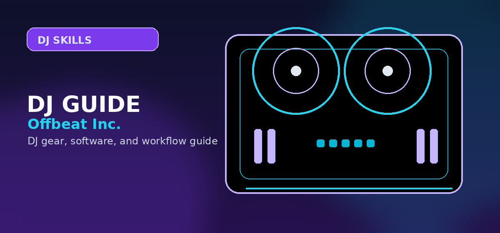

How to Promote DJ Mixes in 2026: SoundCloud, Mixcloud, Instagram & TikTok Strategy
Comprehensive guide to how to promote DJ mixes SoundCloud Mixcloud Instagram TikTok 2026 with practical recommendations and current buying notes — updated 2026.

Disclosure: This page uses affiliate links. We may earn a commission at no extra cost to you. Full disclosure →
Give each release a clear path: finish and check the recording, choose a host for which the mix is eligible, confirm playback and rights, then share one useful listening link. Help listeners identify the music and decide whether to follow, save the mix or ask about bookings. Start with the channels your audience actually uses instead of treating every platform as mandatory.
SoundCloud & Mixcloud: The Conversion Hubs
Choose one appropriate home for the full mix before planning discovery clips. Mixcloud licenses eligible shows over 15 minutes under its Featured Artist Rules; check eligibility and actual playback availability. SoundCloud requires permission for all included third-party tracks. An absence of copyright flags is not clearance. On either host, include a readable artist-and-title tracklist, identify the style and duration, and test the public link before sharing. Gear notes belong only where they help explain the recording, rather than leading every description with a sales pitch.
TikTok: Short-Form Discovery Hook
If short clips suit your audience, show one clear transition or explain a practical mixing choice with a readable caption. Check that you may use the clip on that platform; a short excerpt is not automatically exempt from copyright rules. Point interested listeners toward the full mix using a working profile or other supported route, and test that route on a phone. Choose a manageable number of clips per release and compare the response from your own audience rather than expecting viral reach.
Turning Listeners Into Repeat Fans
Promotion works best when every platform points listeners toward the next useful action: follow the profile, save the mix, join an email list, check the tracklist, or watch a short breakdown of the transition they just heard.
Use gear notes sparingly and only when they genuinely help the listener understand the workflow. A clear tracklist, consistent visual identity, and reliable posting cadence matter more than pushing products into every caption.
Publish & Share Sequence
Run the same order on every release so nothing slips through the cracks. Nothing below promises a growth outcome — it is the sequence of checks, in the order they should happen.
- Finish the file and tracklist first. A verified WAV/MP3 export and a complete tracklist exist before any posting (see our recording guide for DJ mixes).
- Host the full mix first. Upload an eligible Mixcloud show, or use SoundCloud only when you have permission for all included third-party tracks — then confirm how the platform shows the upload (available, restricted, or geo-blocked) before promoting the link.
- Publish the YouTube version with rights checks. Handle Content ID and territorial restrictions the way our YouTube guide for DJ mixes describes, and confirm the video's playback state in Studio.
- Post a short clip per major channel. Use a short excerpt only when its platform-specific rights allow it; test the profile or other supported route to the full mix on a phone.
- Close the loop during the release week. Answer tracklist and track-ID requests, refresh your profile links with the new mix, and note which route brought back real listeners so the next release can lean on it.
Platform Comparison & Recommendation
Use each platform for the part of the funnel it handles best: discovery clips, full-length archives, trust-building posts, or direct listener follow-up.
| Platform | Best Use | Strength | Caution |
|---|---|---|---|
| SoundCloud | Full mix archive + discovery | Searchable catalog and repost culture | Copyright handling varies by upload |
| Mixcloud | Long-form licensed mixes | Home for eligible licensed shows (over 15 minutes) under its rules | Check eligibility and upload availability; shows can still be restricted by Featured Artist Rules |
| TikTok | Short transition clips | Good surface for short visual hooks | Weak for full-set listening |
| Brand trust + gig proof | Good for reels, flyers, and social proof | Links are less direct than a website/email list |
Quick Verdict
- For Discovery: Focus on TikTok. Short-form clips are well suited to showing one transition to new listeners.
- For Booking Leads: Focus on Instagram. Use clear imagery and recent-set proof so promoters can trust the profile at a glance.
- For Long-term Reference: Focus on SoundCloud or Mixcloud. The tracklist, archive, and platform availability are what promoters and listeners return to.
Promoting your DJ mixes well comes down to a repeatable system: an accurate tracklist, a reliable release cadence, and consistent profiles. Use every upload to make your set easier to discover, easier to understand, and easier for promoters to evaluate.
Promotion checklist: Finish the export and tracklist (see the recording guide). Upload to Mixcloud if eligible and to your SoundCloud archive, confirming what each platform shows as available. Publish the YouTube version after the rights check. Write a tracklist description with artist names. Cross-post a 60-second clip to Instagram Reels and TikTok. A consistent full-mix archive, short clips, and an up-to-date profile give promoters and listeners an easy way to find and evaluate your music. Shop Focusrite Scarlett 2i2 on Amazon →
Shop on Amazon
Record and upload your mixes in high quality — audio interfaces on Amazon.
Frequently Asked Questions
What is the best platform to post DJ mixes?
Choose the host whose rules fit the mix. Mixcloud licenses eligible shows over 15 minutes under its Featured Artist Rules, but availability can be restricted. SoundCloud requires permission for all included third-party tracks. YouTube video rights and Content ID policies must be checked separately; a claim is not permission.
How do I avoid copyright strikes on DJ mixes?
Use a platform that licenses eligible DJ shows (for example, Mixcloud under its rules), use tracks with clear rights for online video, or use your own music or Creative Commons material whose license permits the specific use. On YouTube, check the claim owner and policy in Studio and dispute only when you actually have rights to that use.
Can DJ mixes go viral?
Yes, but less commonly than music. Viral DJ sets (like Boiler Room sets) spread through social media. Consistent quality, engaging visuals, and promotional posts improve discoverability.
How often should a DJ release mixes?
One quality mix per month is a workable pace for a solo DJ. Consistency matters more than frequency. Regular releases build a following when combined with social media promotion.
Does posting mixes on Mixcloud help get gigs?
Yes. Venues increasingly check Mixcloud/SoundCloud before booking. A well-curated mix profile showing your genre range and mixing quality is one of the best electronic press kits you can have.